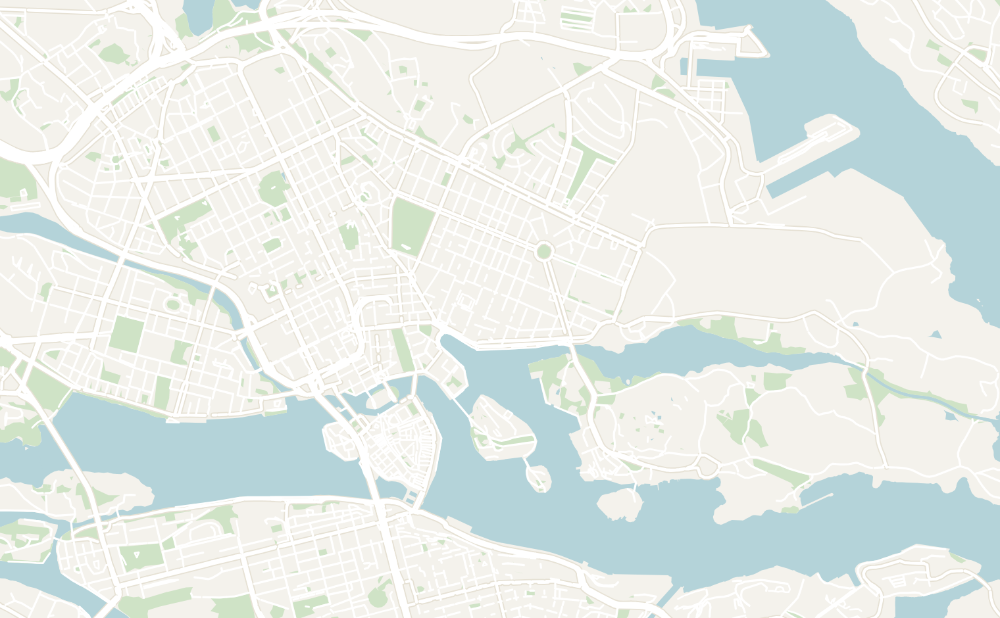
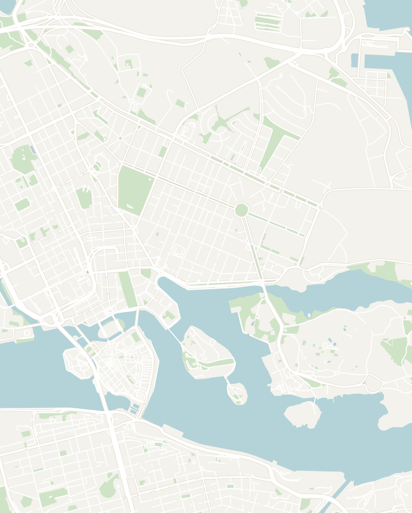
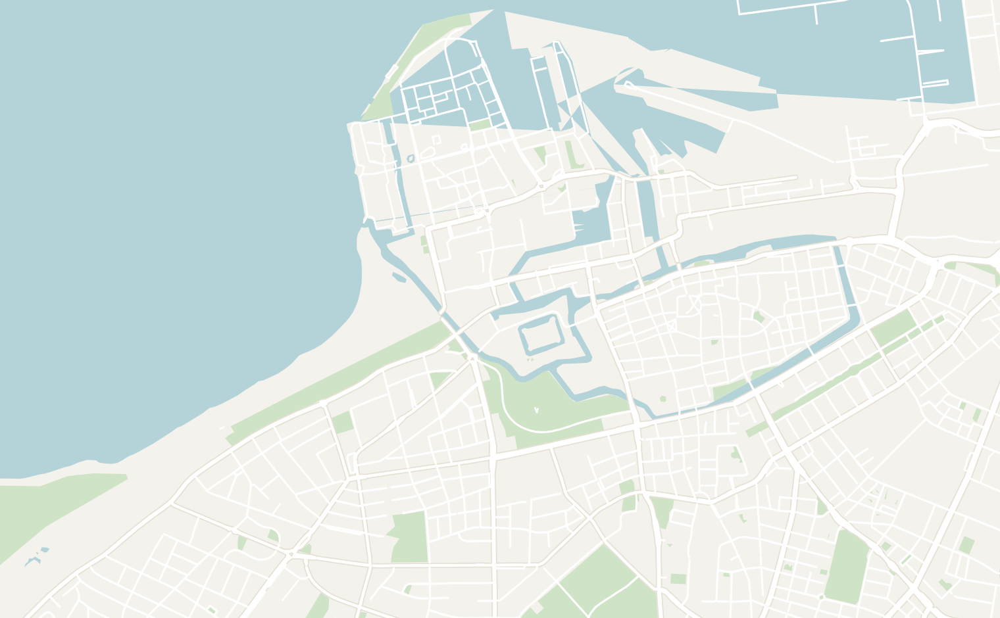
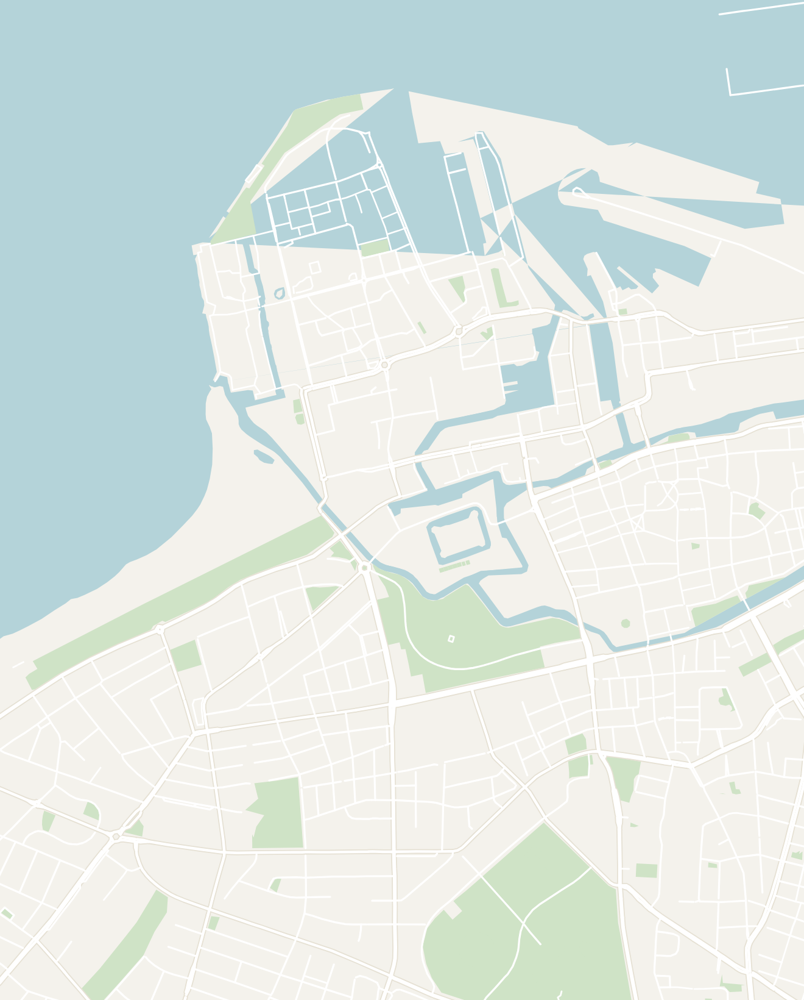

General
Sweden is where Scandinavian design, historic charm, and nature come together. Its capital, Stockholm, is one of my favorite cities in northern Europe. The city is spread across 14 islands connected by elegant bridges, giving it one of the most beautiful settings of any European city. Although Sweden is an expensive destination, a few days is enough to experience Stockholm's highlights, and it combines easily with nearby cities including Copenhagen, Tallinn, or Helsinki.
- Getting around
- Stockholm — Sweden an has one of the best metro systems that is easily navigable even as a first-time tourist in the city. It is famous for its cave-like and hand-painted "art stations", trams and buses. Additionally, Stockholm is built on 14 islands, so ferries double as scenic public transit
- Trains, Planes & Ferries — fast long-distance trains link the main cities, and overnight ferries connect Stockholm to Helsinki and the Baltics. If you're traveling from farther, fly into Stockholm Arlanda Airport
- Money — despite being a member of the EU, Sweden uses it's own currency called the Swedish Krona and not the euro. However, Sweden is close to cashless so you might not even have to withdraw cash. Expect it to be expensive as Scandinavian countries usually are
- Food — Swedish cuisine is surprisingly tasty and widely known. You'll need to try the famous Swedish meatballs covered in a thick layer of gravy and served with lingonberries (don't even dare compare it to IKEA). Other dishes to try are the cured salmon (gravlax), pickled herring and fika (the sacred coffee-and-cinnamon-bun combo). Swedish pastries are rated some of the best in the world and I can confirm from first hand experience
- Language — The primary language is Swedish (mutually intelligible with Danish and Norwegian). Sweden also has the highest English fluency rate for a non-native speaking country. Almost everyone you meet will be fluent in English. Scandinavians are known to be reserved. However, the Swedish people I've met during my travels have been very social and open
- How long to stay — 2–3 days is plenty for Stockholm; add time to explore the archipelago or other cities in summer
Stockholm
2–3 days recommendedStockholm is a city of 14 islands where medieval old towns, royal palaces and design-forward neighborhoods all sit on the water. It really surprised me as one of the prettiest capitals that I've visited in Europe. It is very easy to explore on foot, public transport and by ferry. It felt like a very international and livable city (despite the high cost of living). I would recommend spending 2 to 3 days to fully explore the Stockholm.
- The best way to explore Stockholm is exploring by neighborhood in the city center. Here they are from North to South: Östermalm & Norrmalm, Gamla Stan, Djurgården and Södermalm. I've organized the attractions below by neighborhood and be sure to explore the city map below to orient yourself:
- Östermalm & Norrmalm — the city's most upscale neighborhoods, full of wide 19th-century boulevards, designer boutiques and grand stone apartment blocks. Östermalm is worth a stroll for the architecture, waterfront, and it is home to the excellent food hall below
- Östermalms Saluhall — a beautiful red-brick indoor food hall from the 1880s, where Stockholm has bought and sold its fish, game, cheese and bread for generations. It's high-end and not cheap, but it's a lovely place to sample Swedish cuisine: pull up at one of the counters for excellent Swedish meatballs, fresh prawns or a smörgås (open-faced sandwich), and browse the deli stalls
- Strandvägen — one of Stockholm's grandest waterfront boulevards, lined with ornate late-1800s facades and moored boats, looking straight across to the neighborhood of Djurgården (the museum island)
- Stockholm City Hall — not technically in Östermalm, but just further east in the neighborhood of Kungsholmen. The red-brick Stadshuset is where the Nobel Prize banquet is held each December, and you can climb the tower for one of the best views back over the old town
- Helgeandsholmen — a tiny island lodged between the nearby neighborhood of Norrmalm and the old town of Gamla Stan. You can visit it by foot-bridge and it is mostly filled by the Parliament House, with a quiet strip of park and a terraced walkway around its edge. It's an easy place to pause: the surrounding bridges and quays frame one of the best open-water views in the city
- Gamla Stan (Old Town) — the highlight of Stockholm for me was the old town called Gamla Stan in Swedish. Stockholm composed of 14 islands today, but Gamla Stan sits on the original island. It hosts one of the best-preserved medieval centers in Europe, consisting of a tight maze of bright red and yellow facades, cobbled lanes and hidden courtyards that are photogenic
- Stortorget — the picturesque square that lies at the center of Gamla Stan, lined with colorful 17th-century gabled merchant houses. It's Stockholm's most photographed square and the perfect place to stop for a coffee or simply soak up the atmosphere
- Royal Palace — one of the largest palaces in Europe still used by a reigning monarch, featuring lavish state apartments, royal museums, and a daily changing of the guard ceremony
- Mårten Trotzigs Gränd — Stockholm's narrowest alley, squeezing down to just 90 cm (35 in) at its narrowest point. Tucked away in the winding streets of Gamla Stan, it's a fun photo stop and an easy landmark to miss if you aren't looking for it
- Djurgården — Stockholm's green museum island that is a short walk or ferry from the center. It packs most of the city's big museums into one leafy park alongside walking paths and water, so it is easy to spend a full day here drifting between the sights
- Nordiska Museet (Nordic Museum) — a grand, castle-like museum on the museum island of Djurgården telling the story of Swedish everyday life over the last 500 years. I explores everything from fashion, folk traditions, Sámi culture to the ritual of table settings. It sits among Djurgården's other famous museums, so pair it with the extraordinary Vasa Museum (a fully intact 17th-century warship raised from the harbour) or the ABBA Museum next door
- ABBA Museum — an interactive, unapologetically kitschy tribute to Sweden's most famous export, ABBA. Here you can sing, mix tracks and share a stage with holograms of the band. It is genuinely fun if you have any love for ABBA. Book a timed ticket online to skip the line. It books up far in advance so make sure to look into tickets ahead of time (I wasn't able to make it since I didn't know how popular the ABBA Museum is)
- Skansen — the world's oldest open-air museum, a hillside of historic wooden buildings brought here from all over Sweden and staffed by people in period dress, plus a small zoo of Nordic animals like bears, wolves and moose. It is a solid half-day and one of the better things to do in the city to learn more about traditional Swedish culture
- Södermalm — the hip, slightly grungy island just south of Gamla Stan, and more of a fun neighborhood to visit for food & drinks than historical sites. It is full of vintage shops, coffee spots, bars and viewpoints, with far fewer tourists than the old town
- Fotografiska Museum Stockholm — a first-rate contemporary photography museum in an old brick customs house on the waterfront, with rotating world-class exhibitions. The top-floor café has one of the best views in the city and it stays open late, so it makes a good evening option
- Mariaberget — a pocket of steep lanes and old wooden houses on the northwest edge of Södermalm, with a clifftop path (Monteliusvägen) that looks straight across the water to City Hall and Gamla Stan. Go around sunset for a spectacular view
- Explore the Stockholm Archipelago — home to over 30,000 islands, skerries and rocks scattered across the Baltic Sea. They are a popular Stockholm summer escape as they are right off the city and easily visited by cheap public ferries. Within a day, you can reach a red-cottage islands like Vaxholm, Grinda or Sandhamn. Visiting the islands is very popular among locals during the summer months from June to August for a swim off the rocks, a forest walk and a seafood lunch
- Restaurant Akkurat (Södermalm) — a great restaurant in Södermalm serving great Mussels. They also have a wide collection of beer and whiskey to complement your meal
- TAK — a slick rooftop bar and restaurant high above Norrmalm, with strong cocktails and a wraparound terrace over the city. Go for sunset, and book ahead if you want a table outside
- Omnipollos Hatt — the buzzy taproom from cult Swedish brewery Omnipollo, pairing creative craft beers with excellent sourdough pizza. It is small and popular amoung locals
- Djurgårdsbron floating bar — a tiny bar in a little wooden room literally floating on the water by the Djurgården bridge, with ducks and swans paddling past the deck and boats bobbing alongside. A fun spot to stop by on your way to or from the Djurgården museums
- Base yourself anywhere in downtown (Östermalm, Norrmalm, Gamla Stan, and Södermalm). Stockholm is extremely walkable so just base yourself for wherever your budget allows
- City Backpackers Hostel — a clean, social and well-run hostel a short walk from the central station, complete with a sauna, free pasta and a good mix of travelers. I really enjoyed staying here


Double-tap to open in Google Maps
Malmö
1 to 2 days or a day trip from CopenhagenMalmö is Sweden's diverse, design-forward third city, right at the country's southern tip. It's actually closer to Copenhagen than Stockholm, just ~40 minutes by train over the Øresund Bridge. Therefore, many people fold it into a Denmark visit as a day trip (as I did back in 2021). It is a relaxed mix of medieval old town, modern architecture and multicultural food.
The best way to visit is a day trip from Copenhagen or spend 1 to 2 days to fully explore the city. It was an interesting first visit to Sweden for me, but not a must-visit destination by any means
- Lilla Torg — the cozy, cobbled little square at the heart of the old town, lined with 16th- and 17th-century half-timbered houses. Malmö is mostly a modern city so this is the perfect place to get a sense of a classical Swedish city
- There are also many café and restaurant terraces that spill out under the umbrellas in summer. It's the great place to sit with a coffee or a beer and watch the town drift by, and it opens onto the larger Stortorget Square just around the corner
- Malmö Castle (Malmöhus) — a 16th-century fortress with a moat that is the oldest surviving Renaissance castle in Scandinavia. Once serving as a prison, Malmö Castle now packs the city's art, natural-history and local museums under one ticket. The grounds are the nicest part: the pretty Slottsträdgården gardens and a windmill sit right alongside, good for a wander
- Form/Design Center — a small, free hub of Scandinavian design and architecture set around a light-filled courtyard building, with rotating exhibitions and a nice café. It is a good, quick dip into the Nordic design world
- Bullen Två Krögare — a wonderfully old-school restaurant that's been serving proper Swedish home cooking since 1893, the spot for classic Swedish meatballs or fried herring with mash in an unchanged, cozy dining room
- Konditori Katarina — a lovely traditional bakery-café and a great place to try out Scandinavian pastries. The Swedes actually have a word called fika which means the dedicated break time (similar to a siesta) specifically to enjoy a coffee and a fresh cinnamon or cardamom bun


Double-tap to open in Google Maps
Other Places to Consider
Sweden is a huge country (by European standards) that stretches deep into the Arctic. There is plenty more to explore beyond Stockholm and Malmö:
- Gothenburg — Sweden's laid-back second city on the west coast, about three hours from Stockholm by fast train. It is mainly university town known for its Dutch-style canals, a serious café culture (Swedes take fika seriously here), a lively food scene built on fresh seafood from the fish market, and the big Liseberg amusement park
- Swedish Lapland (Abisko & Kiruna) — the Arctic far north, that can be reached by an overnight train or a flight from Stockholm. This is northern-lights country in winter. Abisko National Park famous for some of the clearest aurora skies anywhere in the world, plus the original ICEHOTEL (rebuilt from the frozen river each year) at Jukkasjärvi and dog-sledding through the snow. You can visit during the summer as well with the midnight sun and hiking the Kungsleden trail
- Gotland — a large Baltic island a ferry ride off the east coast, and a beloved Swedish summer escape. Its walled medieval town of Visby is a UNESCO-listed gem of cobbled lanes, church ruins and a famous rose-draped ring wall. It is packed in high summer, especially during the medieval-week festival. Beyond it are pale limestone sea stacks, quiet beaches, farm cafés and long light evenings